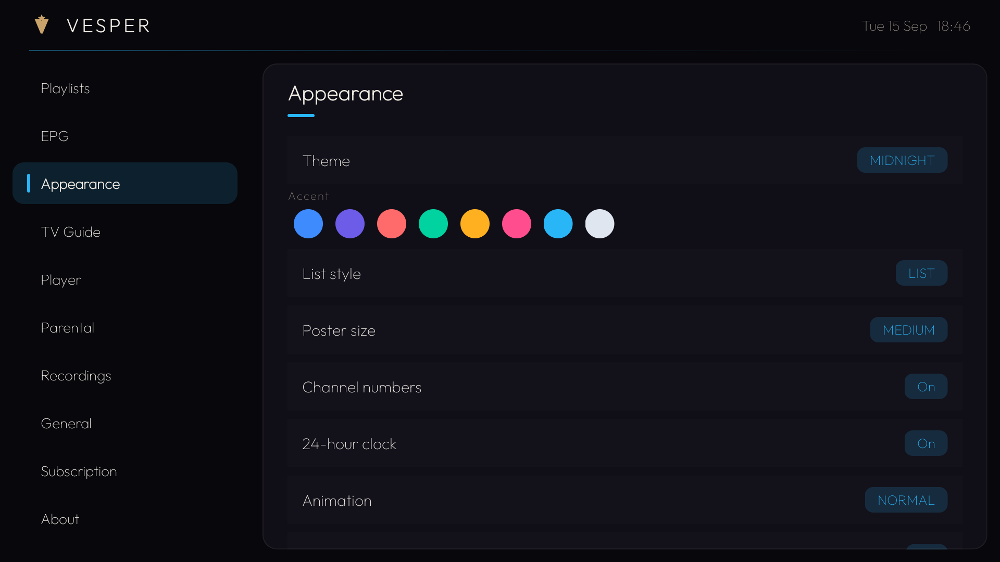
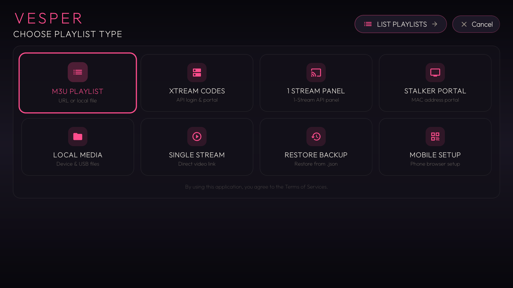
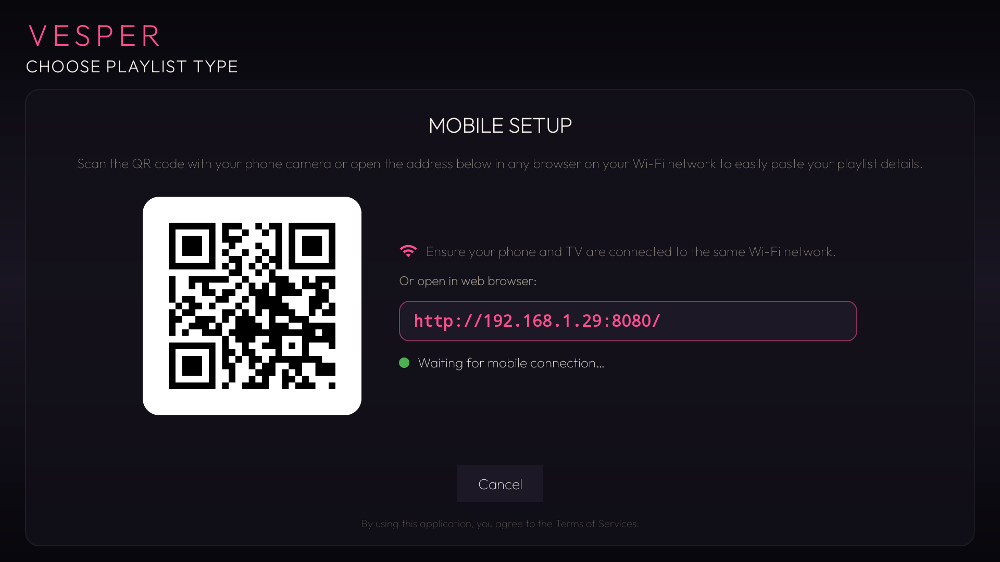
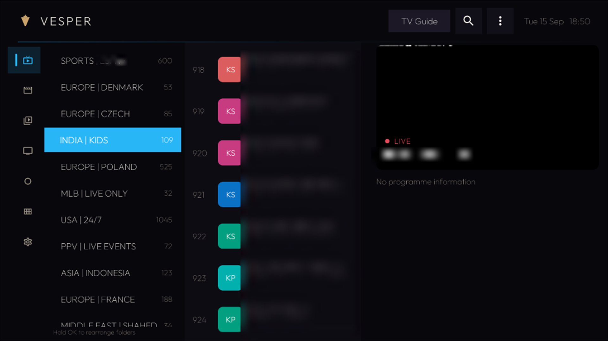
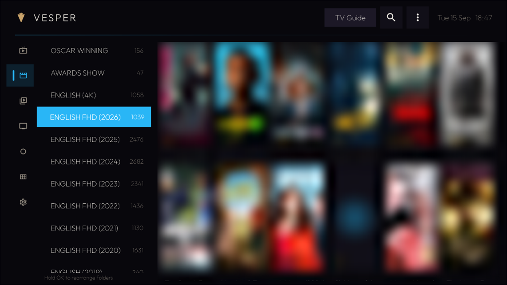
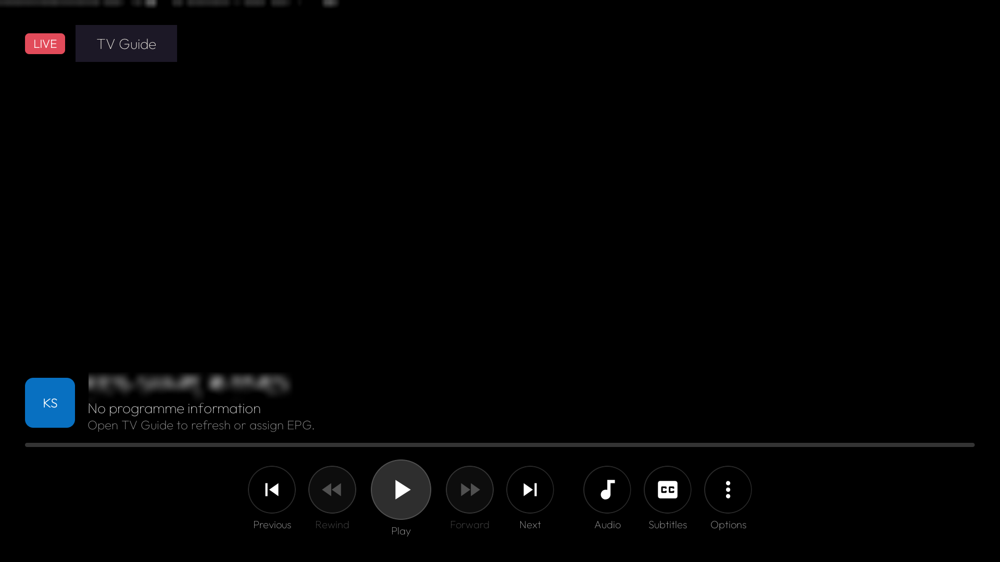

Three-pane Home
Move naturally between media types, groups, channels, and posters.
A focused, privacy-first player for Android TV, Google TV, and Android phones. Add your own authorised M3U, local file, or Xtream-compatible service and enjoy fast navigation, EPG, catch-up, multi-view, and local recording.
Player only. Vesper includes no channels, movies, series, playlists, or subscriptions.

A clean Android TV experience that stays out of the way of your content.
Move naturally between media types, groups, channels, and posters.
Browse programme details, search the guide, and open provider catch-up.
Poster browsing, details, favourites, and continue watching.
Watch multiple live sources with a device-aware decoder budget.
Save an authorised live stream to storage you choose.
No developer account, analytics, advertising, or cloud watch-history service.
Large focus targets, clear hierarchy, and deliberate remote navigation.





Production-signed APKs and checksums for Android TV, Google TV, and handheld Android devices.
Package studio.vesper.player • Version pending
r766746.github.io/vesper-websiteAvailable after verificationAvailable after verificationPublished with the APKSHA256SUMS.txt.adb install -r app-tv-release.apk (TV)adb install -r app-phone-release.apk (Phone)
No. First launch asks you to add your own authorised source.
Download the Android TV Edition for smart TVs, Google TV, Fire TV, soundbars, and streaming boxes (built for D-pad remote navigation and direct USB storage access). Download the Phone & Tablet Edition for Android phones and tablets (built for touch gestures and mobile player controls).
Playlist configuration, settings, favourites, and watch history remain on your Android TV or mobile device unless a feature must contact your provider or an optional metadata service.
Every public APK is checked for package, version, production signature, and SHA-256 checksum before publication.